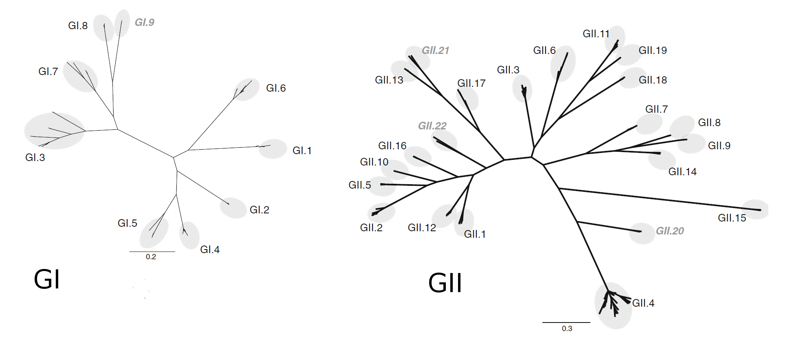
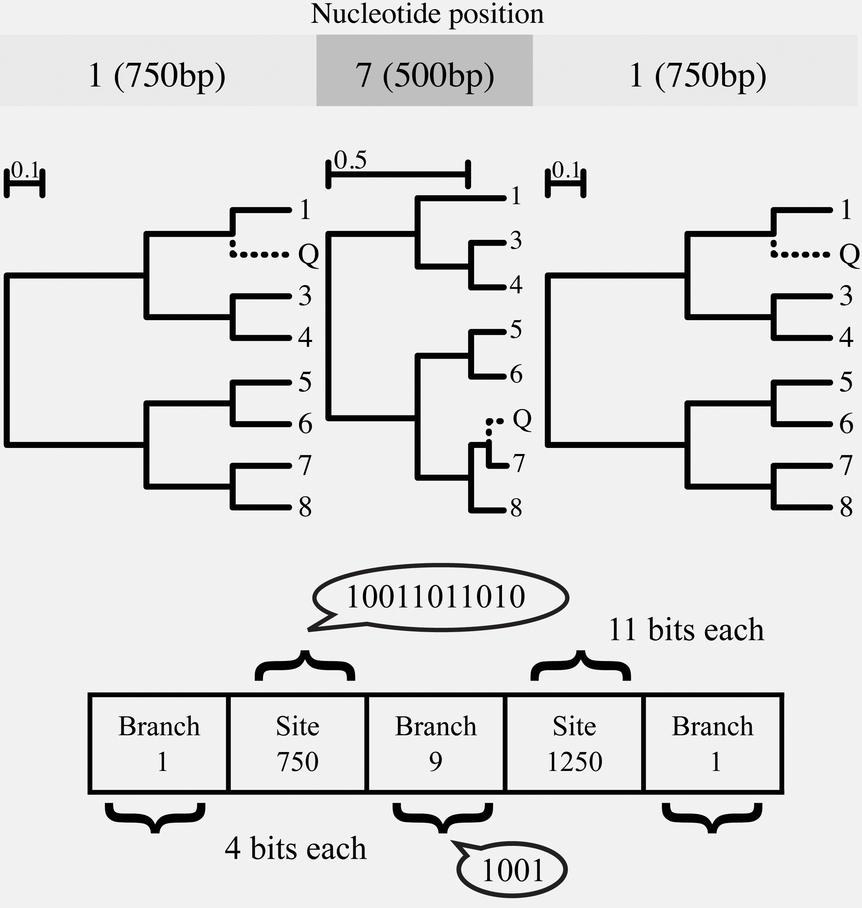
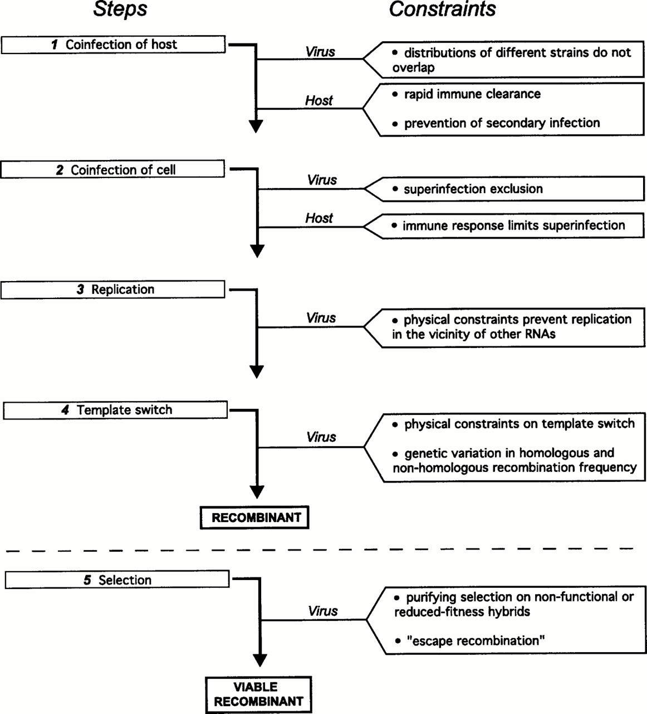
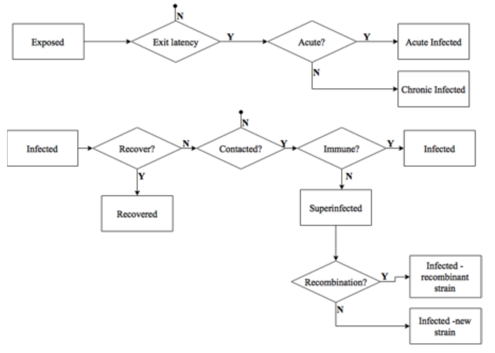
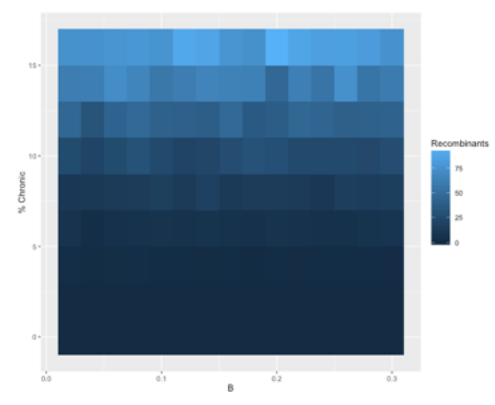
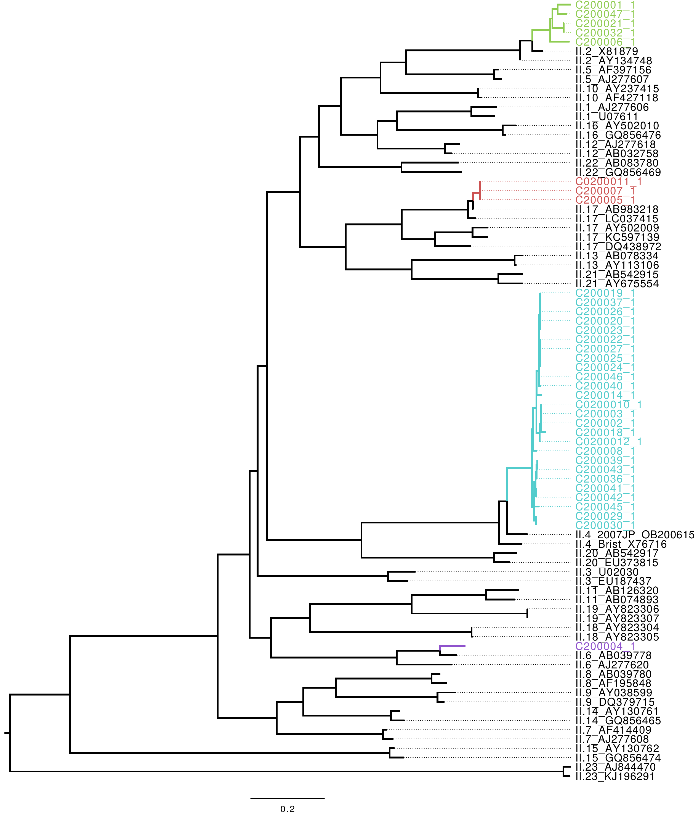

Hospital based surveillance of norovirus
Simon Frost, M.A. D.Phil.
Dept. of Veterinary Medicine, and Institute of Public Health
University of Cambridge

Acknowledgements
- Dept. of Medicine
- Reidun Lillestol
- Lydia Drumright
- Regional Molecular Genetics Laboratory
- Kim Brugger
- Part II Pathology, DID
- Chloe Byers
Introduction
- Norovirus is an important cause of viral gastroenteritis worldwide
- Case reports are increasing, and new strains - often recombinants - emerging
- How do recombinants emerge, when the infection is acute and associated with aggressive symptoms?
- Outbreaks are seasonal, but no non-human reservoir
- How does norovirus persist over the summer?
Outline:
- Genotyping of norovirus and recombination
- Old work, in need of updating
- The hospital setting as a crucible for new strains
- Work in progress
Genotyping
- Many viruses are divided into genotypes
- e.g. Norovirus is divided into several genogroups, genotypes, and clusters
- GI, GII, GIII, GIV
- GII.3, GII.4, etc.
- e.g. Norovirus is divided into several genogroups, genotypes, and clusters

Kroneman et al. Arch. Virol (2013)
Noronet typing
- Genogroup assignment using BLAST against a reference set of enterovirus genomes
- If Norovirus GI or GII, and there is overlap (>100nt) with regions used for genotyping
- Phylogenetic trees are built using reference alignments of ORF1 and ORF2
- Further fine-scale genotyping of GII.4 strains
- Recombination is only detected between ORF1 and ORF2, by a discordant genotype
Issues with Norovirus genotyping
- Recombination may occur within ORFs
- Genotype assignment is on the basis of clustering with reference strains
- What if the sequences cluster with an ancestor of the reference strains?
- What if recombination occurs within genotypes?
- Methods assume that the reference alignment is free of recombination
- What if the reference sequences are themselves recombinants?
Subtype Classification using Evolutionary Algorithms

Kosakovsky Pond et al. PLoS Comp Biol (2009)
ORF2 II4/II20 recombinants

Dynamics of II4/II20 recombinants

Recombination-free references?
- Reference alignments should be free of recombinant variants
- If present, recombinant sequences should be split up into non-recombinant segments
- Is there recombination in the Noronet reference alignments?
- Apparently absent from ORF1, as well as GII.4 ORF1 and ORF2 alignments
- Some indication of recombinants in the ORF2 alignment
Bootscan of GII.10

Bootscan of GII.20

Updates
- The previous analyses conducted on c. 16,000 sequences - now 25,000
- Difficult to work out parental strains
- Use temporal and spatial information to help resolve
- Recombinants are common, while recombination may not be
- Noronet reference sets have been updated, and the website often breaks
- Reverse engineering the typing scheme locally
Why so much recombination?

Worobey and Holmes J. Gen. Virol. (1999)
Norovirus and chronic infection
- Norovirus may not always be acute
- Individuals with immunosuppression may become chronically infected
- Infected individuals may continue to transmit
- Individuals may not always be isolated when sick
- Asymptomatic individuals
Modeling chronic infection

Recombination, chronic infection, and infectivity

Multiple infections in hospitals?
- One setting where recombinants may emerge is in hospitals
- Often have outbreaks, with several introductions of different genotypes
- Immunosuppressed individuals may not control the virus, resulting in chronic infection
- May also play a role in persistance over the summer
- Magnify a small number of cases
- Also the potential for asymptomatic healthcare workers to spread infection
Brief protocol
- Faecal samples taken prospectively from patients and healthcare workers (HCWs)
- Acute and chronic patients
- Symptomatic and asymptomatic HCWs
- Full genome norovirus sequencing
- Illumina MiSeq, paired end 2 $\times$ 150bp
- Near full length genomes in 48/52 samples to date at 250 $\times$ coverage
- Also testing of samples through TaqMan Low Density Arrays (TLDA)
Norovirus prevalence in submitted samples

Sequence processing pipeline
- Snakemake based pipeline
- Remove duplicate reads (
fastuniq) - Trim (
Trimmomatic) - Remove human and bacterial reads (
deconseq) - De novo assembly (
iva) - Mapping of reads to contigs (
smalt) - Quasispecies assembly (
QuasiRecomb)
- Remove duplicate reads (
Previous NGS studies of norovirus
- Wong et al. (2013)
- Cotten et al. (2014)
- Bavelaar et al. (2015)
IVA vs. VICUNA
- Wong et al. (2013) evaluated multiple assemblers (excluding IVA) and concluded that VICUNA gave the best performance
- Based on our samples, VICUNA was much faster than IVA but:
- Contigs often failed to be typed
Genotypes of baseline, longest contigs: ORF2

GII.17
- 3 patients were infected with GII.17, an emerging clade of Norovirus first reported in Japan
- First report of GII.17 in the UK

GII.4 recombinant
- Wong et al. (2013) reported recombinant viruses, comprising of a GII.4 (New Orleans 2009) ORF1 and a GII.4 (Sydney 2012) ORF2

Phylogeny of GII.4 recombinant strain

Multiple infections
- Two acute patients sampled from different wards, two weeks apart
- Major: GII.P4 (New Orleans 2009)/GII.4 (Sydney 2012)
- Minor: GII.17 (in ORF2)
- Major: GII.17
- Minor: GII.4 (Sydney 2012) in ORF2
- Major: GII.P4 (New Orleans 2009)/GII.4 (Sydney 2012)
- Chronic patient infected with two different viruses:
- Major: GII.P4 (New Orleans 2009)/GII.4 (Sydney 2012)
- Minor: SaV I (Sapovirus GI.1)
- Major: GII.P4 (New Orleans 2009)/GII.4 (Sydney 2012)
- Chronic patient, sampled from home
- Major: GII.P4 (New Orleans 2009)/GII.4 (Sydney 2012)
- Minor: GII.2 (in ORF2)
- Major: GII.P4 (New Orleans 2009)/GII.4 (Sydney 2012)
Coverage in chronic patient

Longitudinal changes in chronic patient

Conclusions
- The hospital setting is a highly dynamic environment of norovirus transmission
- Multiple introductions with multiple subtypes
- Multiple infections
- Chronic infections
- Recombination?
Ongoing work
- Complete GII.17 outbreak
- More chronic patients
- Healthcare workers
- Methodology for mixed infections
- Detection and genotyping
- Recombination
- Linkage to epidemiology
Thanks!
sdwfrost@gmail.com
 @sdwfrost
@sdwfrost
 http://github.com/sdwfrost
http://github.com/sdwfrost
http://github.com/sdwfrost